A cheap, repeatable ISR concept for small states
UAV SILM is our self-built fixed-wing reconnaissance UAV: a 1.4 m wingspan pusher-type aircraft of about 1.7 kg, designed for ISR (Intelligence, Surveillance, Reconnaissance) use. The aim is long-endurance observation on a low budget with a minimal logistics footprint.
It is light enough to launch by hand and lands on its belly, so no runway, catapult or launch rail is needed. Silm is also the Estonian word for eye.
Professional reconnaissance UAVs are expensive, often subject to export or trade restrictions, and hard to produce or adapt quickly in the field.
Small states and civil-defence organisations lack affordable, quickly built and easily maintained reconnaissance platforms that can be produced and repaired locally. We want to show that a capable platform can be designed and built with student resources and commodity parts.
The long-term audience we have in mind is Estonia's defence and security sector (the Defence Forces, Kaitseliit, and the Police and Border Guard Board) and European defence development programmes. We have not held any discussions with these organisations; this is where we see the concept being useful.
- A low-cost, locally built airframe (target unit cost under $500) could put the platform within reach of organisations without a professional-system budget.
- A long calculated endurance (target around 100 minutes) would allow real observation work.
- A secure link concept (4G LTE with an encrypted WireGuard MAVLink failsafe) is designed to keep data protected and the link available under interference.
- The same airframe suits agricultural, urban and forestry survey work.
- Most hobby-grade fixed-wing UAVs aren't optimised for ISR. Our endurance target, airfoil and airframe come from CFD analysis aimed at exactly that.
- We pair open-source flight control (ArduPilot) with an encrypted 4G and WireGuard backup link, an unusual combination for a student-scale build.
- The wings and nose cone are modular, so one airframe can be reconfigured for different missions.
- We document the whole design process (XFLR5 and OpenFOAM analysis, centre-of-gravity work, materials, test rigs) so it can be repeated, corrected or used for training.
Swap the parts, not the airframe
We designed the airframe around modular components, so the same base platform can be reconfigured for different missions. Use Take it apart on the model at the top of the page to see the modules separate.
- Cheaper, higher aspect-ratio wings can be fitted for lower-paced missions or to deliver explosive payloads.
- A screw-on nose cone carries either an explosive or an ISR payload.
- The centre of gravity is adjusted by choosing which modules are fitted.
- 3D-printable airframe.
- Affordable: target unit cost under $500.
- Suited to military use, and to agricultural, urban or forestry topographic survey work.
- Lightweight and launchable by hand.
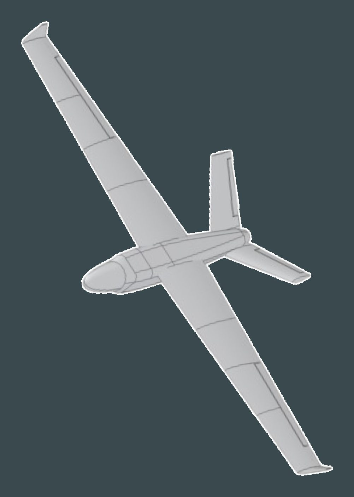
What the design is calculated to do
Every number here comes from our XFLR5 vortex-lattice analysis, OpenFOAM CFD and hand calculation on the current geometry, not from flight tests. Treat them as design targets.
- Endurance target: about 100 min
- Cruise L/D: about 22 at 3° (XFLR5, wing and tail), about 14 for the full aircraft in CFD
- Stall speed: about 9.9 m/s level
- Static margin: about 20% of MAC with the wing moved aft
- Negative Cm slope, so statically stable
- Trims at about 19 m/s with the ruddervators neutral
- ArduPilot autopilot
- Mission route planned on a map, flown as GPS waypoints
- 4G LTE and WireGuard failsafe concept
We sized the motor against the 1.7 kg all-up mass with margin for material or battery changes. Static thrust will be measured on our own test rig before flight (see Build). The motor sits inside the tail cone on its long shaft, so the cone needs cooling vents.
An ArduPilot autopilot with GPS, compass and digital airspeed sensing flies the aircraft autonomously along waypoints. We plan each mission on a map in our own planner on a laptop and upload it over USB before launch; the aircraft then launches from a hand throw, flies the whole route and lands itself.
There is no radio-control link: nobody flies the aircraft by hand, so takeoff, the mission, the landing and every failsafe are automatic. A 4G LTE module paired with an encrypted WireGuard link on a Raspberry Pi Zero 2W is planned as an optional channel for watching telemetry during a flight.
The nose cone screws on and off, so the same airframe can carry an ISR sensor payload or be reconfigured without redesigning the fuselage. Swapping the wing set for a cheaper, higher aspect-ratio pair trades cruise performance for lower-cost, lower-tempo missions. Because modules attach at fixed stations, moving the centre of gravity is mostly a matter of choosing which modules are fitted.
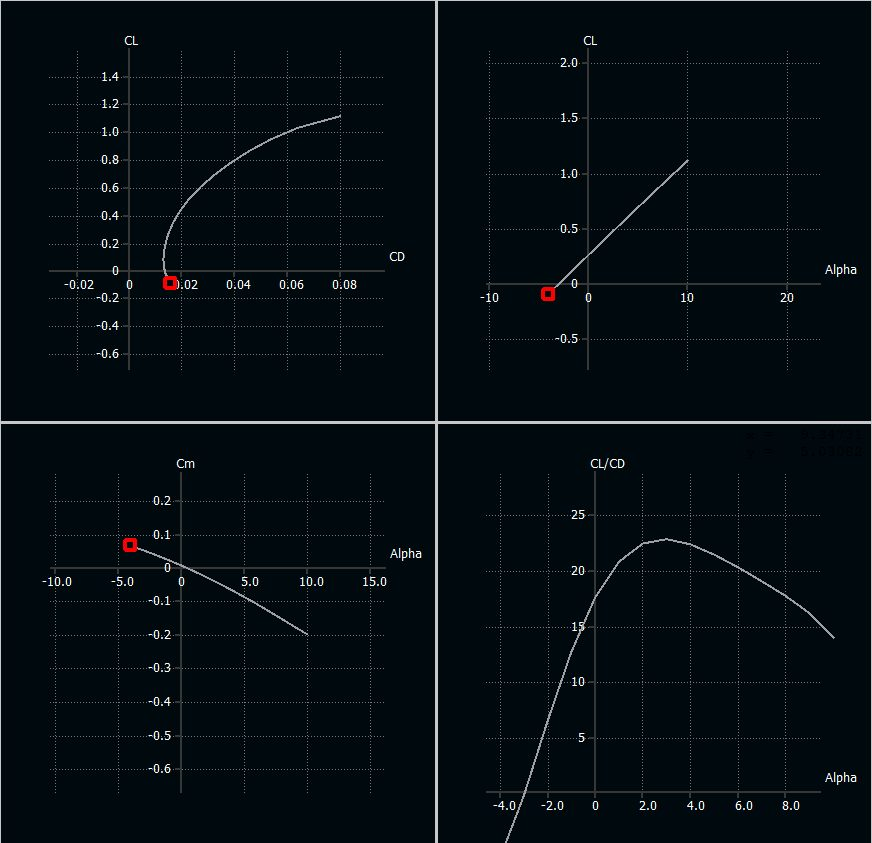
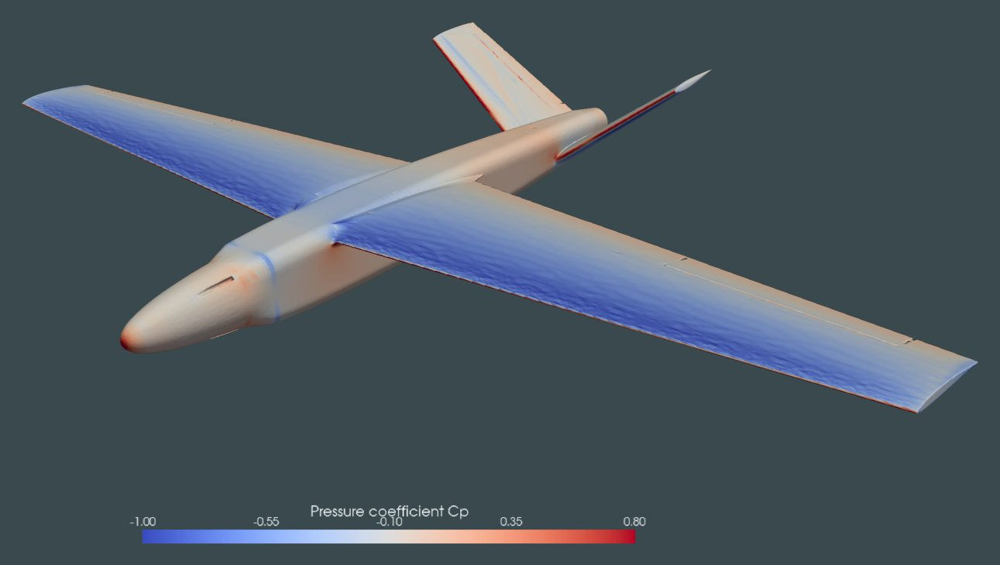
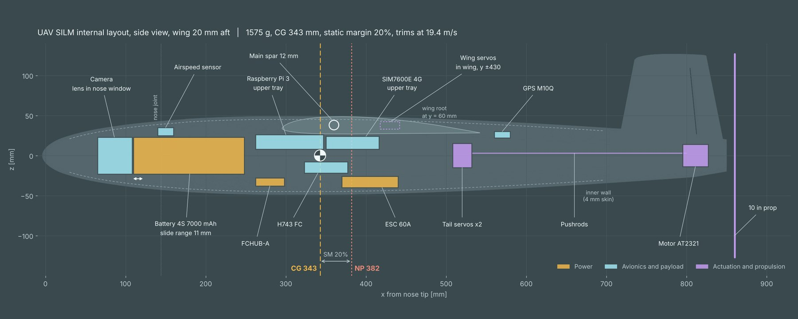
Engineering at the core, supported across subjects
Aerodynamics: lift and drag in XFLR5 and OpenFOAM, balance, flight dynamics, and the thrust rig's lever-arm mechanics.
Centre-of-gravity and static-margin calculations from the 3D model, tail volume sizing, load factors in turns, and the thrust conversion formula.
Lightweight foaming LW-PLA for skins, PETG for loaded parts, trays and gaskets, carbon-fibre spars, epoxy and carbon-filament rivets.
ArduPilot configuration, map-based mission planning, an encrypted WireGuard link, Python on a Raspberry Pi for the thrust rig, and the 3D viewers on this site.
Estonian and European defence capability, and the ethics and regulation of dual-use technology.
A shared task sheet with priorities and owners, budgeting, procurement and a day-by-day plan to the presentation.
Where every part sits, and why
We placed each component against real cross-sections of the V4 fuselage, then balanced the aircraft from the 3D model. Pick a part in the model or in the list to see its position and the reason for it, and try the battery and tail-servo options to see how the balance moves.
| Component | Mass | x from the nose | Level | Why it sits there |
|---|---|---|---|---|
| Camera, Siyi A2 Mini | 85 g | 65 to 108 mm | Centreline, nose window | As far forward as it goes. It needs a forward view, and at 85 g it is the second-biggest weight ahead of the CG. The lens looks out through a window in the nose. |
| Airspeed sensor, ASPD-4525 | 8 g | 140 to 160 mm | On top of the battery | Close to the pitot tube, so the pressure tubes stay short. With a pusher propeller the nose is the only clean air. |
| Battery, 4S 7000 mAh | 590 g | 110 to 248 mm | Centreline | A third of the total mass, so it is our main balance adjuster: 10 mm of movement shifts the CG by 3.5 mm. It sits on the centreline, where the round fuselage is widest, and the nose taper stops it going further forward. |
| Power board, FCHUB-A | 15 g | 262 to 298 mm | Lower deck | Directly behind the battery, so the thick battery leads are as short as possible. Everything else takes power from here. |
| Raspberry Pi 4 | 46 g | 262 to 347 mm | Upper tray | On the upper tray under the wing root. Its first position, on a tray above the battery, hit the fuselage wall. |
| Flight controller, Matek H743 | 28 g | 323 to 377 mm | Lower deck | Its centre is 7 mm from the CG. The motion sensors work best close to the CG, where rotation adds the least false acceleration. |
| 4G module, SIM7600E | 33 g | 350 to 416 mm | Upper tray | Next to the Pi for a short USB cable, and below the main spar. Its antennas go on the fuselage sides, away from the GPS. |
| ESC, 60 A | 28 g | 370 to 440 mm | Lower deck | Keeps the battery-side leads short. The long motor wires run along the floor to the tail. It sits on standoffs with an air gap. |
| Wing servos, 2 × SG90 | 18 g | 430 mm, in the wing | In the wing, 430 mm out to each side | In the wing next to the ailerons. Only their leads enter the fuselage. |
| Tail servos, 2 × SG90 | 18 g | 508 to 532 mm, or 728 to 752 | Centreline, side by side | Two options under study: ahead of the wing trailing edge with 270 mm pushrods, or in the tail with short links. The CG differs by only 2.4 mm between them. |
| GPS and compass, M10Q | 8 g | 560 to 580 mm | Top | Behind the wing, so the carbon spar does not block the sky, and away from the ESC, motor and 4G module because of its compass. |
| Pushrods | 6 g | 532 to 803 mm | Centreline to the ruddervator horns | Carry the tail servo movement to the ruddervators. At this length they need two guides each so they do not bend. |
| Motor, T-Motor AT2321 | 94 g | 795 to 827 mm | Inside the tail cone | As far aft as the tail cone allows. Its long shaft passes through the end face to the propeller. The cone needs cooling vents. |
| Propeller, 10 in pusher | 25 g | 860 mm | Behind the tail | Pushes from behind, which keeps the nose and the camera view clear of the propeller. |
| Wiring and connectors | 70 g | about 335 mm | Spread through the fuselage | Counted as one mass at about 335 mm, close to the CG. |
Positions are along the fuselage from the nose tip. The airframe itself is part of the balance too: about 630 g of printed shells, wing and tail (CAD masses calibrated on the weighed nose cone), the fuselage joints, the battery tray, the 7 mm carbon wing tube and the hatch magnets. Some small items are not placed yet.
An aircraft balances like a seesaw on its centre of gravity. The battery and camera at the front balance the motor, the tail and the rear half of the wing. The chart shows how hard each item pulls the balance point forward or aft: its mass times its distance from the CG.
For stability the CG has to sit ahead of the neutral point, where the extra lift from a gust acts. The gap between the two, as a share of the mean wing chord, is the static margin. Ours is about 20%, a comfortable value for first flights.
Why we moved the wing instead of adding weight
Our first balance check put the CG at 411 mm, behind the neutral point at 364 mm, so the aircraft would have been unstable. We moved the electronics forward, planned a lighter single-wall V-tail and moved the wing 20 mm aft. In CFD the wing move shifted the neutral point by 18.2 mm but moved the CG only about 5 mm, because the wing is only a quarter of the mass. Reaching the same margin with the old wing position would have needed about 80 g of weight in the nose.
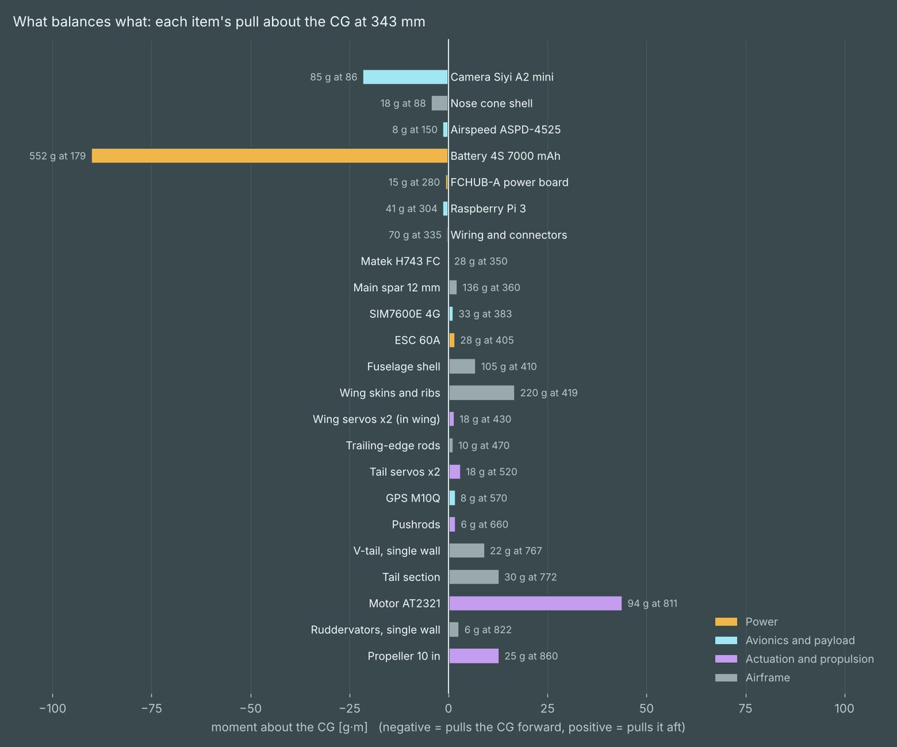
A side view hides the real constraint: the fuselage is round. We sliced the 3D model every 2 to 4 mm along its length and checked that each component's box stays at least 5 mm inside the outer skin, which leaves room for the 4 mm wall and 1 mm of clearance. Three clashes came up.
Raspberry Pi on a tray above the battery
It overlapped the wall by 0.8 mm. We moved it to the upper tray behind the battery, where it has 21 mm to spare.
Camera fully inside the nose at x 80
It did not fit, so the lens now looks out through a window in the nose. Enclosing it completely would push the camera and battery 35 mm aft and move the CG about 14 mm.
Motor at 814 to 846 mm
Only 1.1 mm of wall was left in the narrowing tail cone. We moved it forward to 795 to 827 mm (5.7 mm margin), with a long shaft out to the propeller.
- The battery only fits on the centreline, where the round section is widest. Raised or lowered, its corners hit the wall.
- Between 295 and 545 mm everything stays below 27 mm above the centreline, because the wing root and spar take the space above.
- Tightest fits after the changes, apart from the camera in its window: motor 5.7 mm, battery 5.9 mm, airspeed sensor 6.6 mm, ESC 7.4 mm.
We plan to print the trays in PETG and keep LW-PLA for the skins. Foamed LW-PLA is brittle in thin plates, crushes around screws and inserts, and softens at around 55 to 60 °C.
- Battery tray: PETG, a 2 mm floor with ribs and slots for the 11 mm slide, held with a strap and Velcro. Wide glued flanges spread a crash load of about 100 N into the fuselage.
- Electronics: one removable two-level PETG sled, wired and tested on the bench, then slid in through the hatch.
- Flight controller: on rubber grommets or a printed TPU plate, so motor vibration does not reach its motion sensors.
- ESC: on standoffs with an air gap, away from the skin.
- Fixings: heat-set inserts only in PETG parts; PETG bonded to LW-PLA with epoxy.
- No carbon-filled filament near the electronics: it is slightly conductive and weakens GPS and 4G signals.
The trays add about 30 to 35 g. Most of it sits ahead of or at the CG, which moves the CG about 1 mm forward.
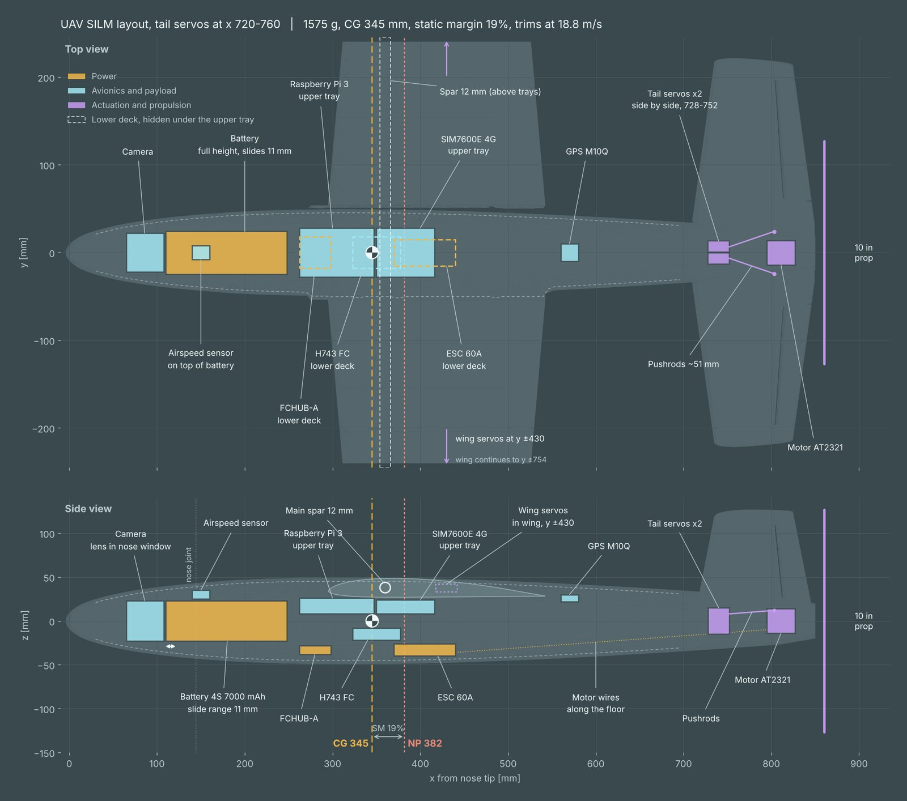
Flying and seeing without a link
The aircraft is meant to launch from a hand throw, fly its planned route, recognise what it sees, save geo-tagged photos and land itself, with no radio link to the ground at all, and to land safely if GPS is lost or jammed. Everything is prepared in our own laptop program, the Ground Station. None of this has flown yet: so far it has been tested in software and in ArduPilot's flight simulator.
We plan in the Ground Station
Our laptop program asks a plain question above every value ("What is the center of gravity of your aircraft?"), and we draw the survey area, launch point and landing strip on a map. It builds the flight controller's settings, the mission and the camera settings from the answers, and checks them all before anything is sent.
Sent by cable, Wi-Fi or USB stick
Settings and mission go to the Matek H743 over USB and are read back to make sure they arrived. The Raspberry Pi 4 gets its settings over its own Wi-Fi hotspot, which switches off while the aircraft is armed, or from a USB stick.
The Raspberry Pi watches the camera
It reads position and attitude from the flight controller, looks for objects in each frame and saves a boxed photo with the object's ground coordinates. An object counts only after it is seen in two frames at the same spot, which removes most one-frame false alarms. It never steers the aircraft.
It lands itself
There is no radio control, so every mission ends with an automatic landing into the wind, and the motor switches off by itself. Low battery, GPS loss or leaving the geofence all lead to the same landing. Above 10 m/s of wind the Ground Station will not let it launch.
Every picture on a map
After landing, the flight comes back to the laptop over Wi-Fi or the USB stick, and the Ground Station shows every picture on a map with its coordinates, filters by object type and exports the list for other map programs.
The Pi watches its own health
It logs its temperature, power supply, free memory and storage, and stops saving ordinary pictures before the storage fills up. If the camera is slow to start or one frame is damaged, it carries on instead of stopping.
GPS drops out or is jammed
Without GPS the aircraft no longer knows exactly where it is.
GPS stays bad for 5 seconds
Carrying on outward would only add to the drift.
A jammer switches off, or sends a false signal
A weak or faked signal can look like a valid fix.
The estimate drifts too far
Dead-reckoning error grows with time and wind.
It lands while GPS is still gone
Without GPS the aircraft can seem to keep moving on the ground and stay armed.
This is a controlled recovery, not navigation without GPS: the longer GPS is gone, the less precise the landing. In the simulator, landings without GPS touched down 85 m past the planned point in 8 m/s of wind and 107 m in 10 m/s, so the landing strip needs at least 150 m of clear ground beyond the touchdown point. At 12 m/s it overshot by 151 m, which is why the Ground Station refuses to launch above 10 m/s.
The detector runs on the Raspberry Pi 4, on the central half of the camera image in four tiles, where the 160° lens is sharpest. Size is the hard limit: at 100 m a car is about 8 pixels for the detector (too few), a combine about 46. The Ground Station works out the highest altitude at which the smallest object you are looking for is still big enough, about 80 m for cars. A colour check finds fire and smoke without any training. The system is set up for 15 classes for farm, forestry and wildfire survey:
| Group | Classes |
|---|---|
| Farm machinery | Tractor, combine, harvester, baler |
| Vehicles | Car, truck, logging truck |
| Farm and forest | Hay bale, livestock, silo, barn, timber stack |
| Hazards | Fire, smoke |
| People | Person |
Our ready-made model knows tractors, cars, trucks and livestock. It was trained on about 1,800 real photos from Google Open Images, then on drone pictures of cattle and sheep taken from above. In drone pictures it had never seen, it found 8 to 9 in 10 of the cattle and sheep (before the drone pictures: 1 to 3 in 10), and 6 to 8 in 10 of its detections were right. The standard model it replaces cannot see tractors at all. New object types can be taught in the Ground Station: add pictures, draw a box around each object, train, and send the model to the aircraft.
Honest status: tractors, cars and trucks were learned from photos taken on the ground, and from straight above, as our camera sees, the model finds few of them; we found no public top-down pictures of them that we may use. Combines are not in it yet, because the public photos of them were unusable. The plan is to fly, save ordinary pictures, label them in the Ground Station, retrain and repeat.
| Check | Result |
|---|---|
| No-RC and failsafe parameters against the ArduPlane source | Every name and range valid |
| GPS-loss script: more than 40 scenarios, including jamming, takeoff, landing and never switching off in flight | All pass |
| Full missions with GPS jamming in ArduPilot's simulator (SITL), wind 4 to 10 m/s, some with GPS gone until after the landing | 6 of 6 pass |
| The same at 12 m/s of wind | Lands 151 m long, so 10 m/s is our limit |
| A fresh simulated flight controller set up only by the Ground Station, then flown with GPS jamming | Passes |
| Ground Station used like a person would, in a real browser: every tab, the map, sending, the launch checklist, the pictures | Passes |
| Recognition model on 298 photos it had never seen | Precision 0.70 to 0.75 |
| Whole onboard pipeline, from camera frame to saved, geo-tagged photo; camera that is late or drops frames | Passes |
| Flight tests | After the airframe is built |
400 automated tests run on every change. They tell us the software does what we intended; only flight tests will tell us whether that holds up in the air.
OpenFOAM CFD of the full aircraft
We ran a 3D RANS simulation of the complete V4 airframe at 20 m/s, first with the original wing position and then with the wing moved 20 mm aft. Lift and stability agree closely with XFLR5, and drag is higher, as expected once the fuselage and fully turbulent flow are included. Moving the wing left lift and drag unchanged and moved the neutral point 18.2 mm aft.
OpenFOAM results for the wing-aft geometry at 20 m/s. The particles move at about 1/16 of real speed and follow the computed streamlines. The aircraft pitches to the chosen angle of attack so the oncoming air stays horizontal. Blue on the surface is suction, red is stagnation.
After the balance check we moved the wing 20 mm aft in CAD and ran the same CFD again at 0° and 3°.
| Original wing | Wing 20 mm aft | |
|---|---|---|
| CL at 0° / 3° | 0.245 / 0.525 | 0.243 / 0.523 |
| CD at 0° / 3° | 0.0275 / 0.0367 | 0.0276 / 0.0368 |
| Neutral point | 363.6 mm | 381.8 mm |
| Static margin, same components | 13.2% (CG 337.8 mm) | 20.0% (CG 342.7 mm) |
| Trim speed, ruddervators neutral | about 15 m/s | 19.4 m/s |
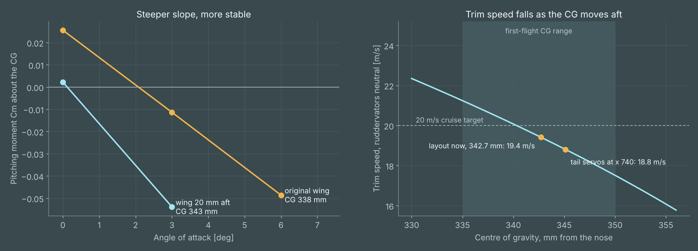
Lift and drag barely changed, so the performance figures still hold. The neutral point moved almost as far as the wing, while the CG moved only about 5 mm. That raised the static margin from 13% to 20% and brought the trim speed close to our 20 m/s cruise target, without adding any weight.
The first run, on 3 November, used the original wing position. Pitching moments are about x = 0.335 m, the CG of our earlier XFLR5 design point.
| Angle of attack | CL | CD | L/D | Cm | XFLR5 CL / CD |
|---|---|---|---|---|---|
| 0° | 0.245 | 0.0275 | 8.9 | +0.022 | 0.257 / 0.015 |
| 3° | 0.525 | 0.0367 | 14.3 | −0.019 | 0.513 / 0.0227 |
| 6° | 0.781 | 0.0562 | 13.9 | −0.060 | not run |
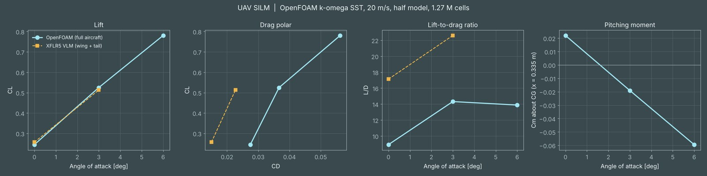
Within 5% at 0° and 3°. The lift slope is 0.089 per degree, so the wing and tail sizing from XFLR5 holds up in full 3D flow.
The pitching moment falls as angle of attack rises, so the aircraft returns to trim after a disturbance. But the neutral point came out at 363.6 mm, further forward than XFLR5 predicted, so the balance needed more care. See Wing moved aft.
XFLR5 models only the wing and tail with some laminar flow. The CFD adds the fuselage, nose and tail boom and treats the boundary layer as fully turbulent, which overestimates friction. The real value likely lies between the two; flight tests will tell.
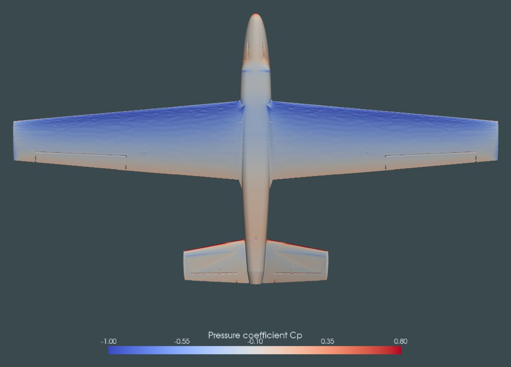
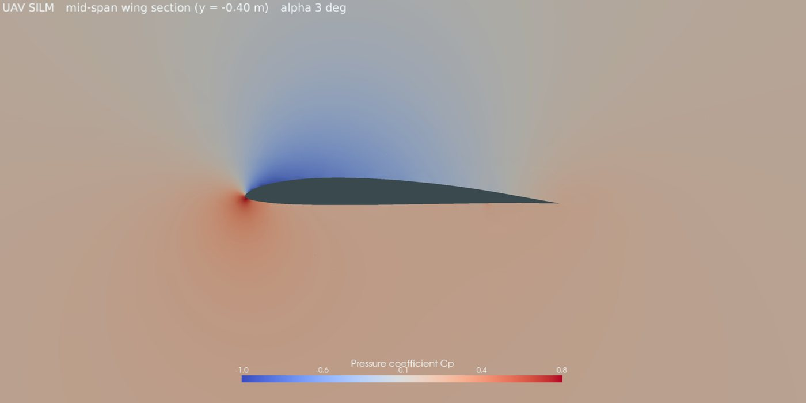
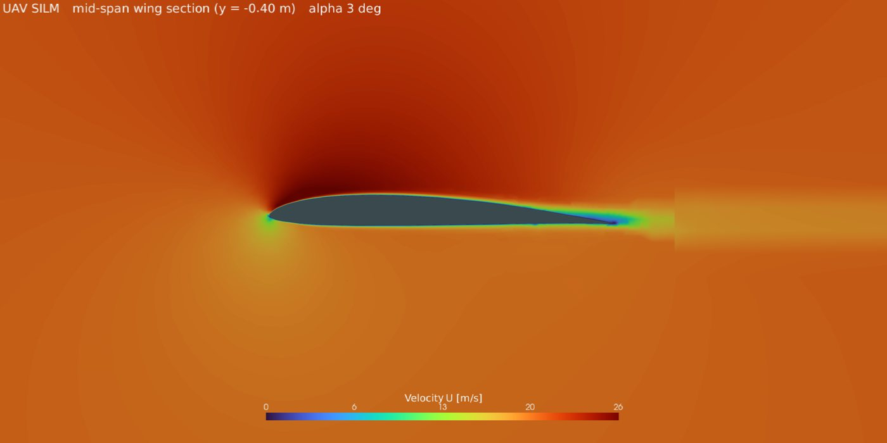
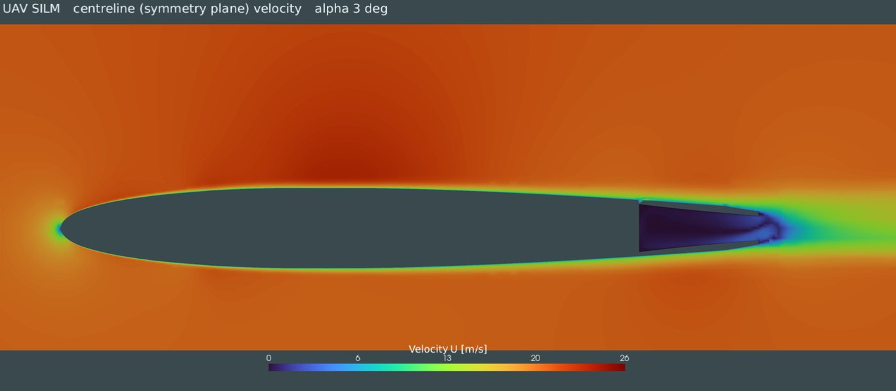
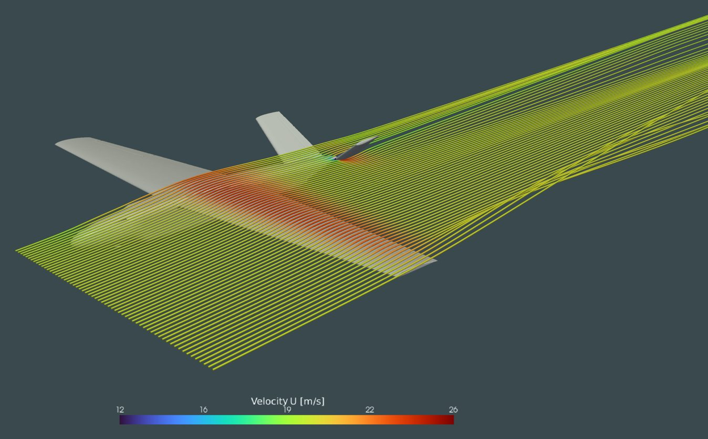
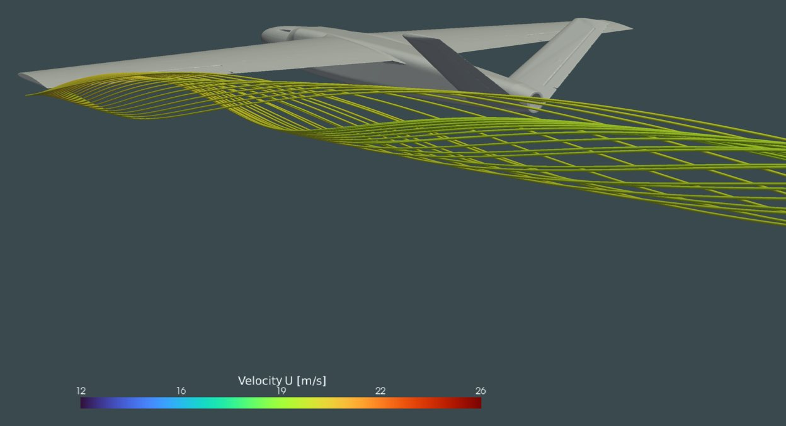
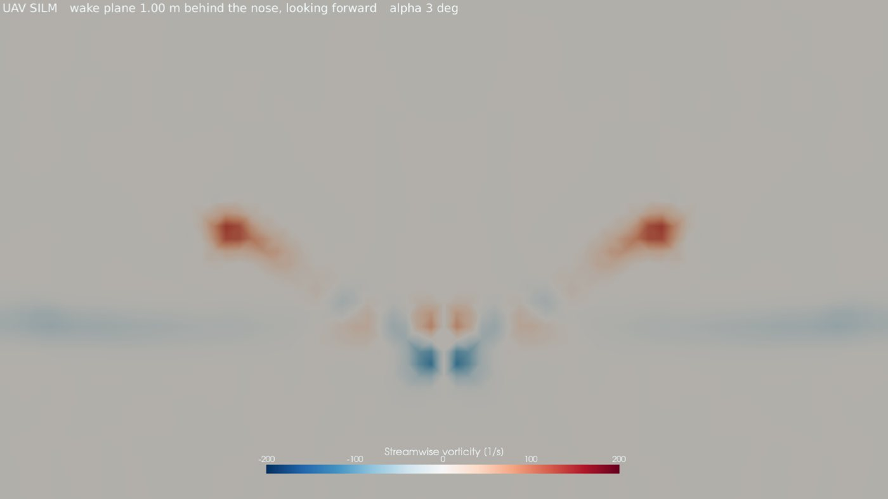
The tip vortex is where most of the induced drag comes from. It is why drag grows faster than lift at higher angles of attack, and why best L/D occurs around 3 to 4° rather than higher. You can see it in the 3D view above: the particles leaving the wing tips curl around each other.
- Each case ran until residuals had fallen about five orders of magnitude and lift had stopped changing.
- We ran one mesh resolution, without a mesh-independence study, so we treat drag as accurate to roughly ±15%.
- The model assumes turbulent flow everywhere, which overstates skin-friction drag at this Reynolds number (about 270,000).
- The hinge gaps at the aileron and ruddervators are smaller than the mesh cells and are not resolved.
- For the wing-aft case we moved the wing and spar 20 mm and sealed the wing root with a short extension; the real redesign moves the wing saddle with the wing.
What we learnt, and what went wrong
The analysis caught several problems before anything was printed, while they were still cheap to fix. These are the lessons we are taking into the build, and the troubles that taught them.
Weigh the airframe from the CAD
Our first balance sheet used placeholder masses for the fuselage, wings and V-tail. Taking volumes from the 3D model gave a 574 g airframe with its own CG at 435 mm, and put the whole aircraft's CG at 411 mm: behind the neutral point, so it would have been unstable.
Moving the wing beats adding weight
Moving the wing 20 mm aft shifted the neutral point 18.2 mm but the CG only about 5 mm. It did the job of about 80 g of nose weight, for no extra mass.
Balance and trim speed move together
Moving the CG aft lowers the stability margin and the trim speed at the same time: 21.2 m/s with the CG at 335 mm, 18.8 m/s at 345 mm. The tail incidence sets the rest.
Check the fit in cross-section
In side view everything fitted. Slicing the round fuselage showed three clashes, and that the battery can only sit on the centreline.
Each tool sees a different aircraft
XFLR5 models the wing and tail with partly laminar flow; OpenFOAM adds the fuselage and assumes turbulent flow everywhere. Lift agreed within 5%, while drag at 3° came out about 60% higher in CFD. Knowing what each tool includes tells us which number to use for what.
Heat is a design load for printed parts
LW-PLA softens at around 55 to 60 °C. The motor sits inside the tail cone and the ESC near the floor, so we are adding vents and printing trays and loaded parts in PETG.
Some choices are mechanical, not about balance
Putting the tail servos at x 520 or x 740 changes the CG by only 2.4 mm, so we will choose between them on pushrod stiffness, access and heat.
Our first CG estimate would have made the aircraft unstable
The CG came out at 411 mm, 47 mm behind the neutral point.
Three components did not fit
The Raspberry Pi, the camera and the motor all clashed with the round fuselage or the narrowing tail cone.
The CAD would not mesh directly for CFD
Some curved surfaces in the STEP export failed in the first meshing tool.
Parallel CFD runs failed at first
Running the solver on two cores clashed with the installed MPI library.
CFD drag disagreed with XFLR5
0.0367 against 0.0227 at 3°.
Our first failsafe settings assumed a radio we do not have
They were written for a pilot with an ExpressLRS radio who would land by hand. Without one, a radio failsafe would trigger at once, the aircraft would refuse to arm, and a return home would end in circling until the battery ran out. Several parameter names did not exist in ArduPlane at all.
The camera speed estimate had its sign reversed
A test against an independent camera model showed forward flight reading as flying backwards. The estimate was switched off by default, so it never reached the autopilot.
The build started late
Airframe printing has not started; the print settings for the foaming LW-PLA still need tuning.
The second parts order slipped
Carbon tube sizes, wire gauge and the arming connector had to come from the CAD first.
- Build the mass model from the CAD on day one, and update it whenever a part changes.
- Fit-check components in cross-section before choosing their positions.
- Order the secondary parts together with the primary set.
- Run a mesh-independence study before trusting drag values.
- Leave room for cooling in every closed compartment.
Progress report
Interim report II covers 24 September to 2 November 2026: what we have done, what went well, what has been difficult, what comes next and how we are tracking against the schedule. We added the balance and layout work from 3 November.
Problems were found on paper
The balance and fit checks found an unstable CG and three component clashes before any part was printed, while they were still cheap to fix.
Main components arrived on schedule
We planned procurement for 6 to 19 October and had all eight primary components in hand on 20 October, so the electronics work is no longer waiting on deliveries.
The aerodynamic design is complete
XFLR5 and OpenFOAM agree on lift and stability, and with the wing moved aft the aircraft has a static margin of about 20%. Aerodynamics is no longer holding up the build.
CAD reached a full-aircraft assembly
Version 4 brings the fuselage, wing, hollow tail with connectors and nose mounts together in one model, which we now use for sectioning, part design and the balance calculation.
We built our own thrust rig
Rather than relying on manufacturer data, we designed and built a stand that measures static thrust for any motor and propeller combination. It will let us check the propulsion choice before flight.
Clear split of work
A shared task sheet with priorities and owners, and a dated plan to 8 December, means each of us knows what is due and when.
The build phase started late
Airframe printing has not started yet. LW-PLA is a foaming filament whose weight and strength depend strongly on temperature and flow, so we need test prints to dial it in (5 to 10 November), followed by PETG settings (13 to 16 November).
The second component order slipped
The secondary list has been open since 20 October, and several items still needed sizing from the CAD: carbon tube sizes, wire gauge and the battery arming connector. We will order on 4 November.
Joining printed sections
The wing and fuselage are printed in sections joined with overlapping edges, carbon-filament rivets, bolts and PETG root gaskets. Hole tolerances have to be proven with test pieces before we commit to full parts.
One structural decision is still open
We have not yet decided whether the 12 mm main spar joins at mid-fuselage or runs the full span. It affects transport, assembly and wing removal.
Software work is behind the hardware
Flight-controller programming and datalink research have not started. The internal layout is now fit-checked, but the trays and mounts still need to be modelled. These now sit on the critical path for ground testing.
The thrust rig took longer than expected
We sketched it up to version 5 before building, and it is still being finalised. It has not yet been run with a battery.
From our working plan of 2 November. Printing and assembly of the airframe sections follow as soon as each part model and the print settings are ready. The battery holder and the flight controller mount will follow the tray plan in Inside the airframe.
| Stage | Planned | What happened | Status | Revised |
|---|---|---|---|---|
| Design and analysis | to 5 Oct | Aerodynamics finished on time; balance redone and wing moved on 3 Nov. Detailed part CAD (mounts, connectors, compartments) continues alongside the build. | On track | Detail CAD to 18 Nov |
| Procurement | 6 to 19 Oct | Primary set received 20 Oct. Secondary order delayed while sizes were finalised. | Partly late | Secondary order 4 Nov |
| Build | 20 Oct to 9 Nov | Thrust rig built. Airframe printing not started; print settings still to tune. | About 2 weeks behind | 5 to 30 Nov |
| Testing | 10 to 27 Nov | Not started. | Moved | 14 Nov to 7 Dec |
| Presentation | 28 Nov to 8 Dec | No change. | On track | 28 Nov to 8 Dec |
Our first interim report (23 September) recorded where the project stood before this period.
- CFD analysis in XFLR5 (VLM1 and VLM2); MH32 airfoil selected over RG15 and SD7037.
- Full-aircraft geometry set: 1.40 m span, 0.263 m² wing, aspect ratio 7.46, high wing and V-tail.
- Mass and CG modelling: centre of gravity 0.335 m, static margin 18.5% at 1.58 to 1.60 kg.
- Aileron and ruddervator response evaluated.
- Electronics selected and sourcing links collected; cost target under $500.
- Finalise V-tail geometry and construction details. Done
- Order and receive components. Primary set done
- 3D-print the airframe and wing. Moved to November
- Assemble electronics and test the link. Circuit due 30 Nov
- First ground and flight tests. Thrust test 14 Nov
Build and testing
The test equipment and electronics we have built so far, and the flight log we will fill in as testing starts.
Before the aircraft flies we want measured, not quoted, thrust for our motor and propeller. We built a desktop stand that measures the static thrust of small brushless motors under controlled throttle.
The motor sits at a fixed station on a pivoted aluminium arm. Propeller thrust lifts the arm, which pulls a line attached to a Vernier Go Direct force sensor. A hard stop limits travel to a few millimetres, so the geometry stays fixed and only the head mass changes between tests.
F is the live line force, Farm the reading with the head removed, R = Lmotor / Lline the lever ratio, m the mass of motor, adapter and propeller, and g = 9.807 m/s². R and Farm are measured once and stored. T is net thrust in grams.
- The sensor connects over USB; a 16×2 LCD shows thrust and head mass.
- A Python script (RPLCD, godirect, RPi.GPIO) asks for the head mass and applies the formula.
- Throttle comes from a manual servo tester on the 4S, ESC and motor chain; voltage and current are read with a multimeter.
- Propeller removed for first power-up and ESC calibration.
- Throttle down, battery off before any change of propeller or motor.
- Propeller disc kept clear; no sustained high current through meter leads.
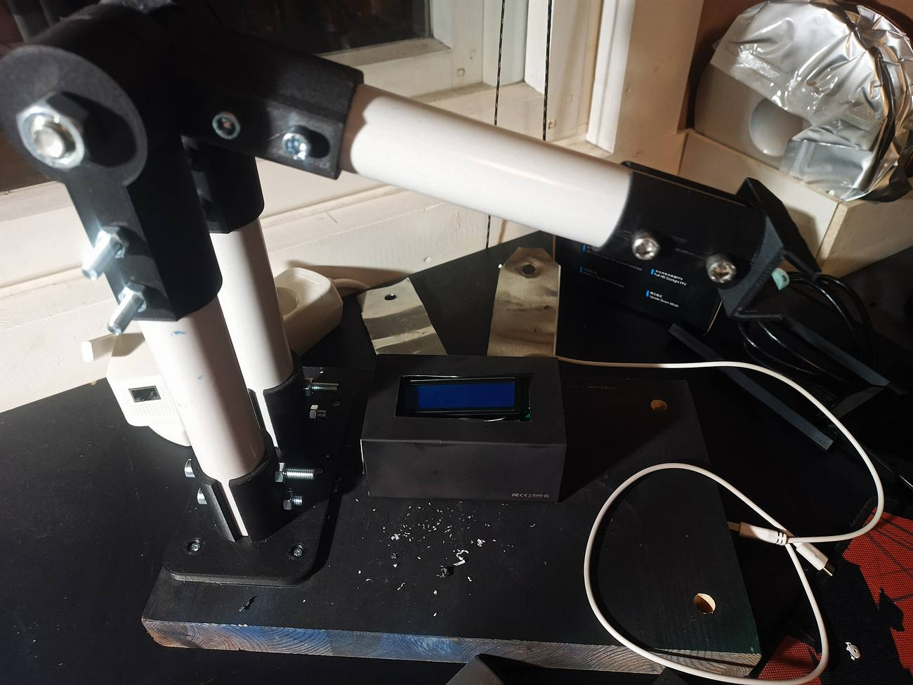
Thrust rig, before the motor is fitted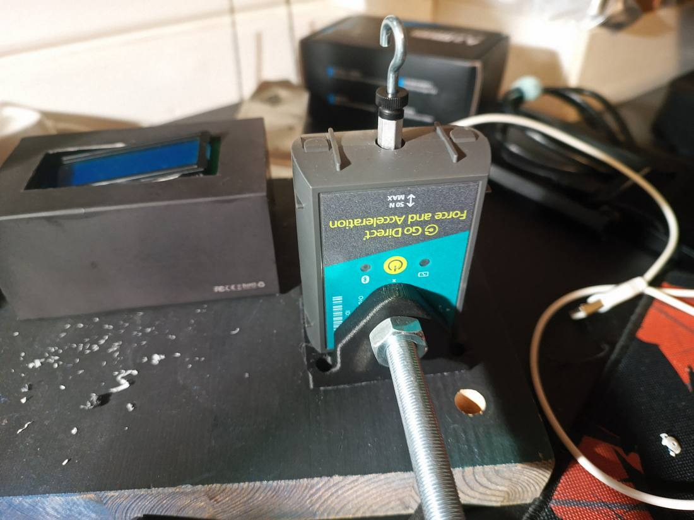
Force sensor and LCD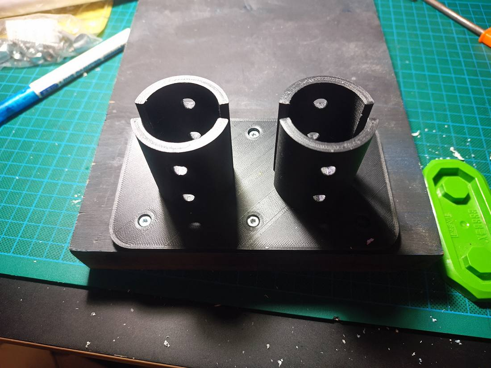
Printed mounts, 19 Oct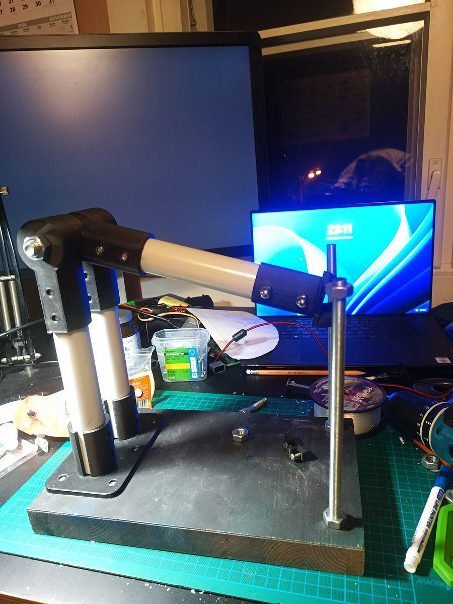
First assembly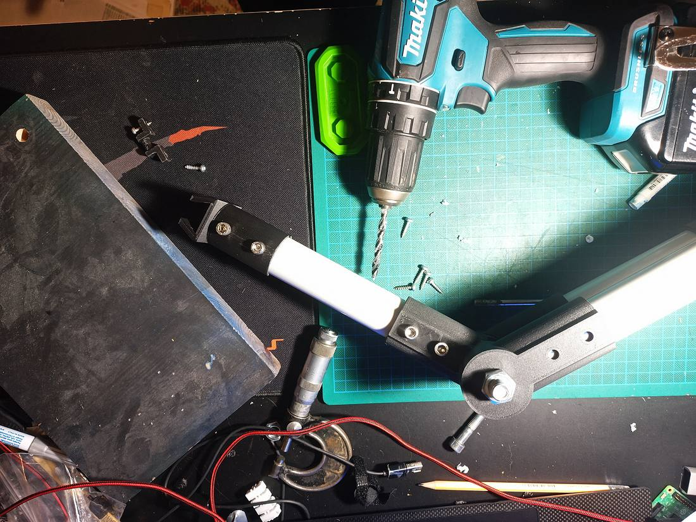
Assembly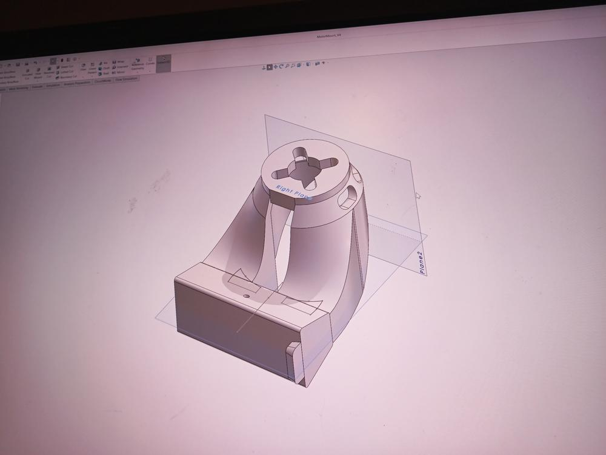
CAD: motor adapter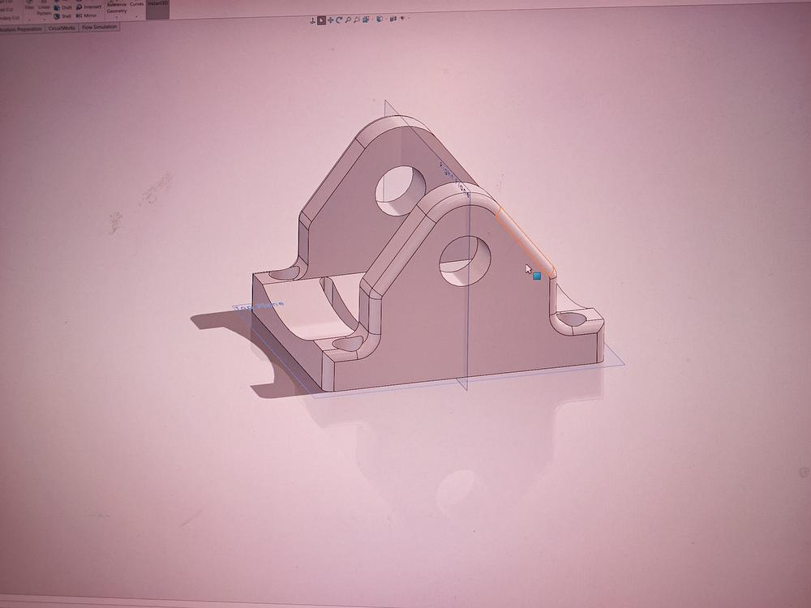
CAD: sensor holder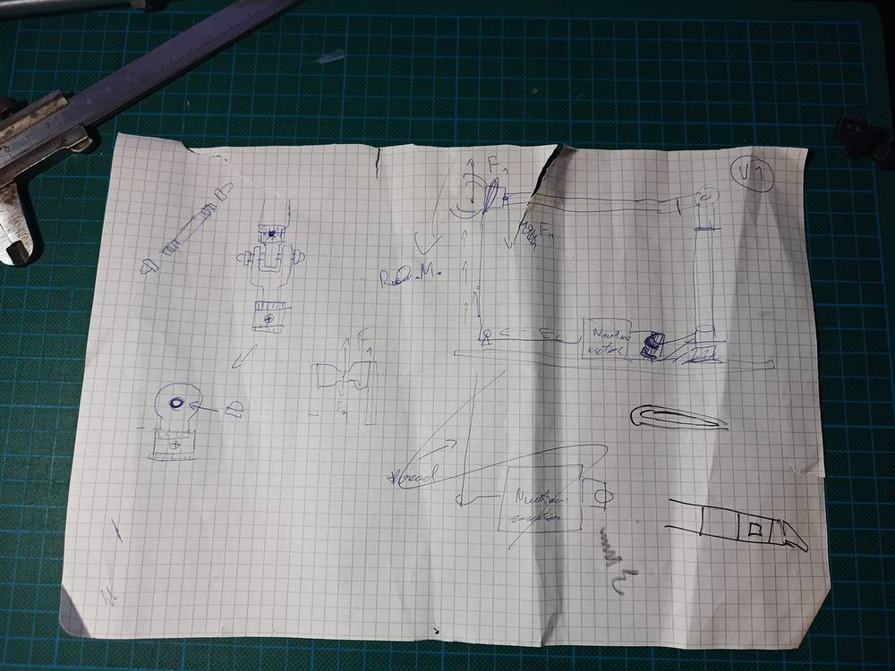
Sketch, version 1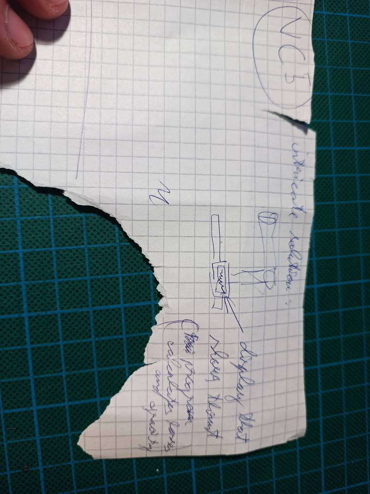
Sketch, version 5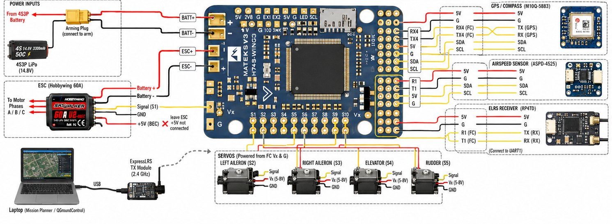
4S LiPo through an arming plug to the flight controller and the 60 A ESC, which drives the motor. The ESC's own BEC output is left unconnected.
GPS and compass on UART4 and I²C, and the digital airspeed sensor on I²C, all on the Matek H743-WING V3.
No radio receiver: missions are uploaded over USB from the laptop planner. Four servos for ailerons and ruddervators are powered from the controller's servo rail.
The physical circuit is due on 30 November. The 4G and WireGuard failsafe (SIM7600E-H module and a Raspberry Pi) is planned as a later addition to the core flight system. Where each part sits in the fuselage is shown in Inside the airframe.
| Test | Date | Result | Notes |
|---|---|---|---|
| Static thrust, AT2321 with 10 in propeller | 14 Nov (24 Nov latest) | Pending | On our thrust rig |
| Weighing printed parts, CG check | As parts are printed | Pending | Replaces the estimated masses; sets the battery position |
| Ground systems check | After 30 Nov | Pending | Control surfaces, link, failsafe |
| First hand-launch | Stretch goal | Pending | Before 8 Dec if the airframe is complete |
| Endurance and range validation | After presentation | Pending | Checks the 100 min target |
Timeline, revised 2 November
Five stages working back from the presentation on 8 December 2026. Struck-through dates are the original plan from September.
Design and analysis
- Airfoil selection and XFLR5 analysis of the full aircraft
- OpenFOAM airframe CFD, then a second run with the wing moved 20 mm aft (3 Nov)
- CG from the 3D model and internal layout fit check (3 Nov)
- Full-aircraft CAD assembly V4; part models continue
Procurement
- Primary electronics received 20 Oct
- Secondary order (servos, inserts, filament, carbon tubes, connectors) on 4 Nov
Build
- LW-PLA settings 5 to 10 Nov, PETG settings 13 to 16 Nov
- Printing the fuselage and wing sections; joining with rivets, bolts and gaskets
- PETG trays for the battery and electronics
- Electronics circuit finished by 30 Nov
- 4G and WireGuard link added after the core system works
Testing
- Static thrust test 14 Nov (24 Nov at the latest)
- Weighing the printed parts and checking the CG
- Ground tests of control surfaces, link and failsafe after 30 Nov
- First hand-launch as a stretch goal before 8 Dec
- Endurance and range validation after the presentation
Presentation and documentation
- Results summary and final website update
- Presentation day: 8 December 2026
Team and responsibilities
We are three students at Gustav Adolfi Gümnaasium in Tallinn. Hover or tap a card for what each of us is working on; some tasks are shared.
- Planning, procurement and budget
- XFLR5 and OpenFOAM analysis, V-tail sizing, wing structure and ribs
- Balance and CG from the 3D model
- Thrust test rig and motor testing
- Top hatch, motor adapter, battery holder and body connectors
- Print settings for LW-PLA and PETG
- Website and reports
- Fuselage sectioning and shelling
- Camera mount and nose cone thread
- Wing rods, connectors and servo compartments
- Flight controller and Raspberry Pi mount
- Ruddervator modelling; propeller research
- Wiring diagram and component confirmation
- Internal component layout
- Final electronics circuit
- Flight-controller programming and datalink research
Tools and materials
Updated 3 November: what we are building with, what has arrived and what is still to order.
| Material | Use |
|---|---|
| LW-PLA (lightweight foaming PLA) | Fuselage and wing skins; 2 × 0.4 mm walls, 3% gyroid infill |
| PETG | Loaded parts: motor adapter slab, wing root gaskets, and the planned battery and electronics trays |
| Carbon-fibre tubes | 12 mm main spar (2 mm wall), trailing-edge rod as control-surface hinge, tail rod |
| Carbon-filament rivets and glue | Joining overlapping printed sections |
| Heat-set threaded inserts | Servo and component mounting, in PETG parts |
| Epoxy resin | Sealing, and bonding PETG trays to the LW-PLA fuselage |
| Component | Model | Status |
|---|---|---|
| Flight controller | Matek H743-WING V3 | Received |
| ESC | Hobbywing Skywalker 60A V2 | Received |
| GPS / compass | Matek M10Q-5883 | Received |
| Airspeed sensor | Matek ASPD-4525 with pitot tube | Received |
| 4G module | Waveshare SIM7600E-H HAT | Received |
| Camera | Siyi A2 Mini, 160° single-axis gimbal, 1080p | Received |
| Battery | Gens Ace G-Tech 7000 mAh 4S 60C | Received |
| Motor | T-Motor AT2321 1250 KV, long shaft | Received |
All received by 20 October. The Raspberry Pi Zero 2W for the optional 4G link is part of the wiring plan; its sourcing is being confirmed. There is no ExpressLRS radio link.
| Item | Quantity | Status |
|---|---|---|
| SG90 micro servos | 4 | Order 4 Nov |
| Heat-set inserts and soldering-iron adapter | M2 to M6 kit | Order 4 Nov |
| Wiring | to be sized | Order 4 Nov |
| PETG filament | 1 kg | Order 4 Nov |
| LW-PLA filament | 1 kg or more | Order 4 Nov |
| Carbon tubes | sizes from CAD | Order 4 Nov |
| Control-surface to servo connectors | 8 | Order 4 Nov |
| Battery connector / arming plug | 1 | Order 4 Nov |
| Equipment | Use |
|---|---|
| FDM 3D printer | Airframe sections, mounts and rig parts |
| Raspberry Pi 3 with 16×2 LCD | Thrust rig computer and display |
| Vernier Go Direct force sensor | Thrust measurement |
| Aluminium arm, pivot and fishing line | Thrust rig lever |
| Servo / ESC tester | Manual throttle during thrust tests |
| Multimeter | Battery voltage and current during tests |
| Drill and soldering iron | Assembly, inserts and wiring |
| Software | Use |
|---|---|
| SolidWorks | CAD for the airframe and parts |
| XFLR5 6.61 | Airfoil polars, vortex-lattice analysis, stability |
| OpenFOAM | Airframe CFD |
| ArduPilot | Flight-controller firmware and autopilot |
| SILM mission planner (our own, laptop) | Map-based mission planning, checks, USB upload and arming |
| Mission Planner / QGroundControl | One-time flight controller configuration |
| Python (RPLCD, godirect, RPi.GPIO) | Thrust rig software |
| three.js | The interactive 3D models on this website |
| Google Drive and Sheets | Shared files, task list and planning |
"Fixed-Wing UAV Design: A Systems Engineering Approach" (ResearchGate)
What we took: a systems-level design process, which helped us order the stages (aerodynamics, structure, electronics, testing).
ScienceDirect article on fixed-wing UAVs
What we took: background on aerodynamic approaches and airfoil selection.
"Development of a Hand-Launched Small UAV for Ground Reconnaissance" (ResearchGate)
What we took: design principles for small hand-launched reconnaissance aircraft, the model for our launch method.
UAS Components (uascomponents.com)
What we took: a reference for component types and specifications.
IRE Journal (irejournals.com)
What we took: background on UAV applications.
Professional encrypted flight-controller literature (AES-256 link systems)
What we took: the idea of an encrypted failsafe link, which we adapted into a cheaper 4G LTE and WireGuard concept.
GitHub project "Drone-Based Reconnaissance of Military Assets"
What we took: a comparison point for software and data handling in a similar open-source project.
V-tail sizing references: Flite Test forum on tail volume coefficients, FMSG Alling "V-Leitwerke", Charles River RC "Quick V-tail sizing"
What we took: V-tail area from tail volume coefficients and the 1/cos dihedral correction, which gave our 140 / 90 mm, 35° V-tail.
XFLR5 documentation and guidelines
What we took: how to set up VLM analyses without the fuselage body, and how to estimate inertia from surface and point masses.
OpenFOAM documentation
What we took: setting up the airframe CFD cases, the force coefficients and the streamline sampling.
Mateksys H743-WING and F765-WING manuals
What we took: pinouts, UART assignments and ArduPilot battery-sensing parameters for the wiring diagram.
ArduPilot Plane documentation
What we took: flight-controller setup and waypoint mission planning.
Vernier godirect and RPLCD Python libraries
What we took: reading the force sensor and driving the LCD on the thrust rig.
three.js (MIT licence) new
What we used it for: the interactive 3D viewers on this site, served from our own domain.
Google Open Images V6/V7 (CC BY 4.0; photos CC BY 2.0) new
What we used: about 1,800 labelled photos of tractors, cars, trucks and livestock to train our ready-made recognition model. Each photo belongs to its Flickr author.
Drone pictures of cattle and sheep, Roboflow Universe new
What we used: "aerial-cattle-detection" by cattle-psyty and "counting-cattle" by arthurmessias (CC BY 4.0), and "aerial-sheep" by riis (Public Domain), to teach our recognition model what livestock look like from above.
Ultralytics YOLO11 (AGPL-3.0) new
What we used: the YOLO11n network and training tools; our model is fine-tuned from it and shared under the same licence.
ArduPilot SITL simulator and LiteRT new
What we used: flying our missions with GPS jamming in simulation, and running the recognition model on the Raspberry Pi.
Leaflet, OpenStreetMap and Esri World Imagery new
What we used: the maps in our Ground Station program (map data © OpenStreetMap contributors, imagery © Esri and its data providers).
Claude (Anthropic)
What we used it for: help organising the website content, writing the page's HTML, CSS and JavaScript including the 3D viewers, setting up and running the OpenFOAM CFD of our V4 airframe, and the centre-of-gravity, fit-check and layout calculations.
Download the software
Everything we use to plan a survey, set up the aircraft, fly it in the simulator and look at the pictures afterwards. Our own code is free to use, change and share under the MIT licence; the parts made by others keep their licences and are credited below.
- a fixed-wing plane running ArduPlane (ArduPilot)
- a flight controller that can run Lua scripts (H7 or F7 boards such as the Matek H743)
- an airspeed sensor, GPS with compass and a battery monitor
- for recognition: a Raspberry Pi 4 and a network (RTSP) or USB camera; other cameras need a lens calibration
- a laptop with Windows, macOS or Linux
- quadcopters and other multirotors
- DJI, PX4 or iNav flight controllers
- small F4 boards that cannot run scripts
- planes without an airspeed sensor
Even on the right aircraft: answer every question about your plane in the Ground Station, fly the mission in its simulator first, check the control directions on the bench, and get your flight authorisation.
Plan, send, launch and look at the pictures, with a guided setup for a new aircraft. Install it like any program; nothing else needed.
Windows may say the publisher is unknown, because the app is not code-signed: choose More info, then Run anyway. On macOS, open it the first time with right-click, Open. Checksums: SHA256SUMS.txt on the release page. The source and the model on their own are attached to each release.
Version 2.2.3, built 2026-11-09 from commit 1b7818baae. Checksums of every file: SHA256SUMS.txt on the release page.
| You want to | Take |
|---|---|
| Plan and fly a survey, see the pictures | The app above. Its guided setup takes a new aircraft step by step to ready-to-fly; GROUND_STATION.md explains every tab. |
| Change the software, or run it from source | The source: on GitHub, or the software zip attached to each release. Start Start Ground Station.bat (Windows) or start_ground_station.sh; FLIGHT_READY.md describes the whole procedure. |
| Set up the Raspberry Pi 4 | Nothing to download: the app installs it over your Wi-Fi (setup step 7) and updates it later. |
| Only the flight controller settings | The app sends them itself. For Mission Planner, its Send tab saves the parameter file made for your aircraft (Full Parameter List, Load from file); the GPS-loss script is in the software zip (ardupilot/scripts). |
| Recognise tractors and livestock | Choose "Ready-made" on the Ground Station's Camera tab: the model is inside the app. On its own it is attached to each release. |
Read before flying: the software is tested in ArduPilot's simulator but not yet flown on a real aircraft. Fully automatic flight without a radio link needs the EASA "specific" category (an operational authorisation from Transpordiamet in Estonia), and taking pictures of people and property has its own rules. It comes as is, without any warranty.
The SHA-256 checksum of every file is in SHA256SUMS.txt on the release page. If the number you get is different, the file is damaged or not ours: do not use it, download it again.
| Computer | Command (in the folder with the file) |
|---|---|
| Windows | certutil -hashfile UAV-SILM-Ground-Station-Setup.exe SHA256 |
| macOS | shasum -a 256 UAV-SILM-Ground-Station-macos.zip |
| Linux | sha256sum -c SHA256SUMS.txt --ignore-missing |
Everything is built on GitHub from a published commit of our repository (the release page names it); the zips are built the same way every time, so anyone can rebuild them and get the same checksums: python3 onboard/tools/build_downloads.py --release --out DIR.
| Part | Made by | Licence |
|---|---|---|
| Our software, settings, script and documentation | UAV SILM team | MIT |
| Recognition model silm_oi | UAV SILM team, fine-tuned from Ultralytics YOLO11n (© Ultralytics) | AGPL-3.0 |
| Photos and boxes the model learnt from | Google Open Images; photos by their Flickr authors | CC BY 4.0 (boxes), CC BY 2.0 (photos) |
| Map in the Ground Station | Leaflet (Volodymyr Agafonkin and contributors) | BSD-2-Clause |
| Map data and tiles | © OpenStreetMap contributors | ODbL |
| Satellite imagery | © Esri and its data providers | Esri terms of use |
| Fonts (on this site and in the Ground Station) | Bricolage Grotesque Project Authors; IBM Corp. (IBM Plex Mono) | SIL Open Font License 1.1 (text, text) |
| Flight controller firmware and simulator (not included) | ArduPilot project | GPL-3.0 |
| Standard recognition model (downloaded on the Pi) | TensorFlow authors, COCO SSD MobileNet v1 | Apache-2.0 |
| Python libraries (installed separately) | pymavlink, OpenCV, NumPy, LiteRT, PyYAML, pySerial and others | LGPL-3.0, Apache-2.0, BSD, MIT |
The full list, with every author and licence text, is in THIRD_PARTY_NOTICES.md, in the app's folder and in the source. The four test photos in it are credited by name in tests/data/oi_samples/samples.json.
UAV SILM is an ongoing student STEAM project, not a finished aircraft. Every figure on this page (mass, endurance, cost, balance, control response) is a theoretical estimate from CFD analysis and hand calculation, not from flight-test data. The 3D models show our CAD and simulation results, not a built aircraft.
We have not held formal discussions with Kaitseliit or the Estonian Defence Forces; we present the platform as a design study and a longer-term aim toward a working, versatile aircraft.